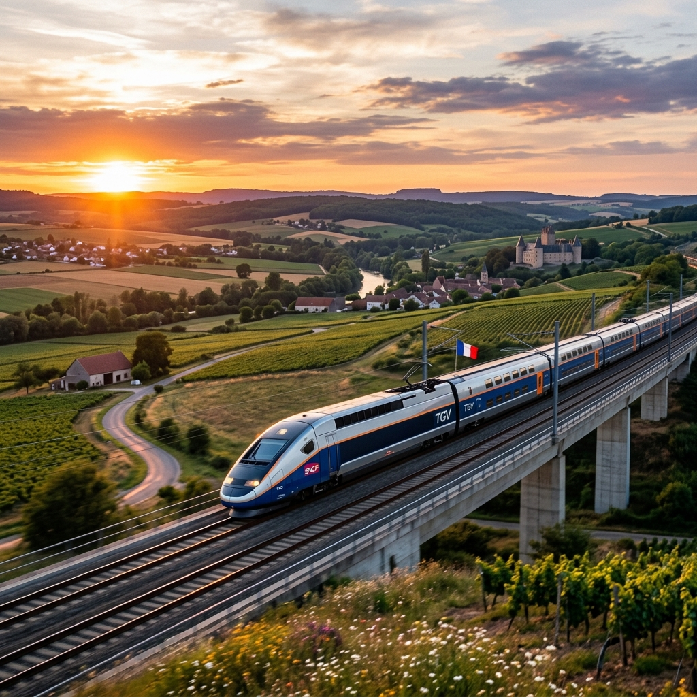

Pioneering High-Speed Rail
Since its launch in 1981 between Paris and Lyon, the Train à Grande Vitesse revolutionized travel. The TGV system has continuously shattered world speed records for wheeled trains, cementing France's position as a global leader in railway technology.
Engineering the TGV M
The latest generation, the TGV M (Avelia Horizon), represents a massive leap in eco-friendly design, featuring a 20% reduction in energy consumption, increased modularity, and fully digital diagnostic systems driving the 21st century's travel experience.